clc
clear
close all
D = dir('C:\\Users\Jake\Documents\Data\HorslenCondAmp');
for ii = 3:numel(D)
clear fit
file = load([D(ii).folder filesep D(ii).name]);
data = file.procdata;
fyupper = [.02 1.8 0.1 0 1500 30 0 0 -.02];
fylower = [.01 1.3 0.0 0 400 5 0 0 -.02];
fyinit = fylower;
fyparameters = [fyinit; fylower; fyupper];
FYfit = getFYgains(data, fyparameters, 'Blum');
plotFY(data, FYfit)
sgtitle(num2str(ii))
[ii FYfit.A FYfit.k_exp FYfit.kF FYfit.kY FYfit.lambda]
end
ans =
3.0000 0.0200 1.4813 888.8446 16.9492 -0.0200
ans =
4.0000 0.0200 1.5357 905.8523 5.0002 -0.0200
ans =
5.0000 0.0101 1.6154 400.0011 30.0000 -0.0200
ans =
6.0000 0.0133 1.7975 870.4197 5.7003 -0.0200
ans =
7.0000 0.0143 1.7689 800.7723 5.0001 -0.0200
ans =
8.0000 0.0100 1.6279 408.3050 30.0000 -0.0200
ans =
9.0000 0.0100 1.4434 400.0004 30.0000 -0.0200
ans =
1.0e+03 *
0.0100 0.0000 0.0015 1.0064 0.0065 -0.0000
ans =
11.0000 0.0125 1.3585 400.0063 29.9998 -0.0200
ans =
12.0000 0.0155 1.3034 403.0794 28.9933 -0.0200
ans =
13.0000 0.0151 1.3000 400.0003 30.0000 -0.0200
ans =
14.0000 0.0100 1.5728 400.0001 30.0000 -0.0200
ans =
1.0e+03 *
0.0150 0.0000 0.0015 1.0153 0.0069 -0.0000
ans =
1.0e+03 *
0.0160 0.0000 0.0015 1.0054 0.0050 -0.0000
ans =
17.0000 0.0108 1.3000 400.5502 17.2153 -0.0200

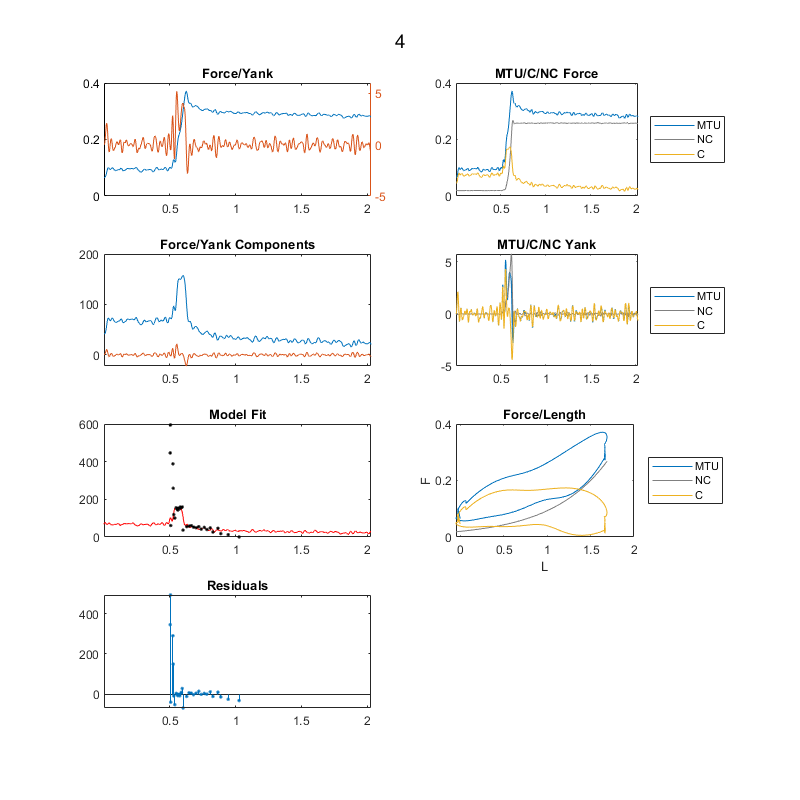 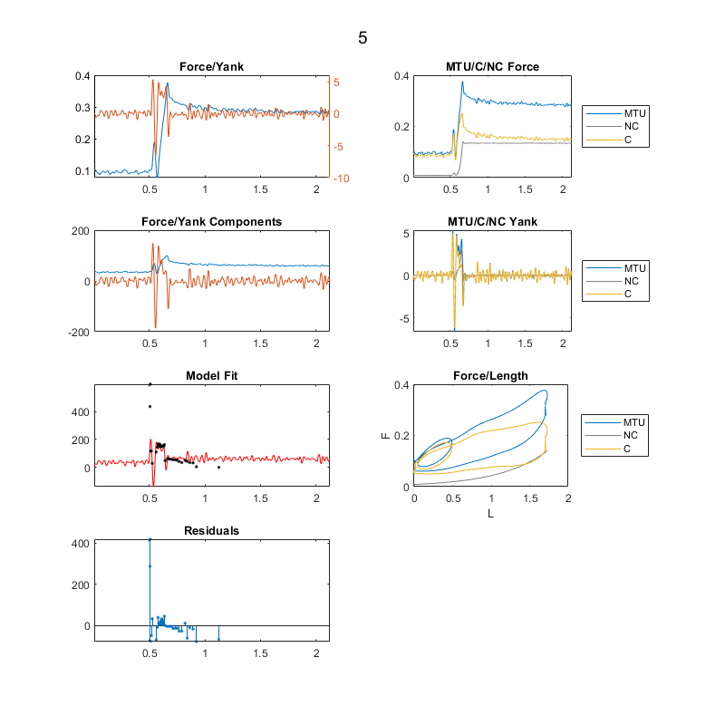 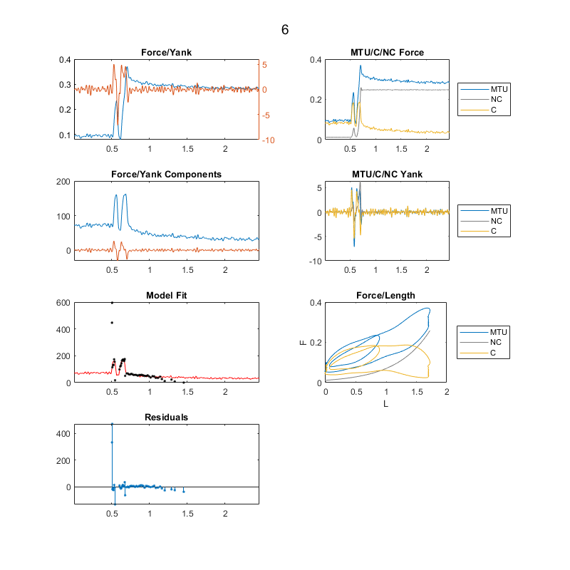 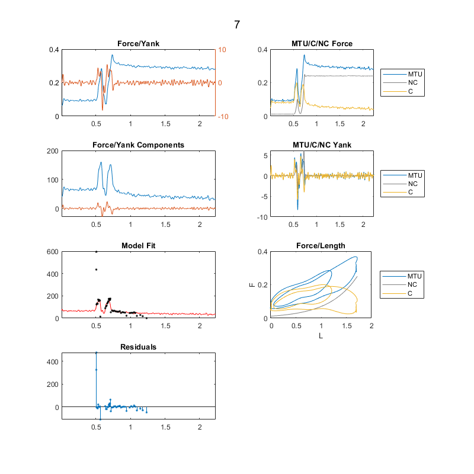 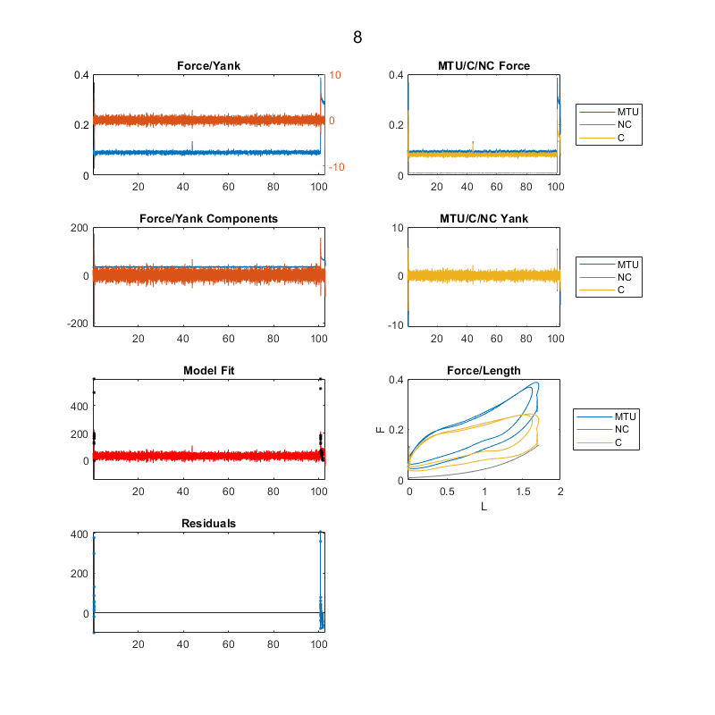 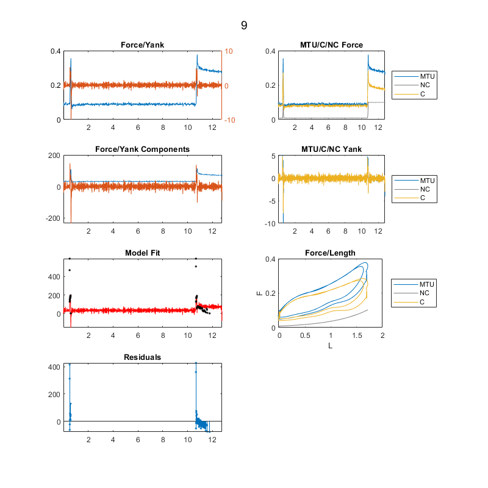 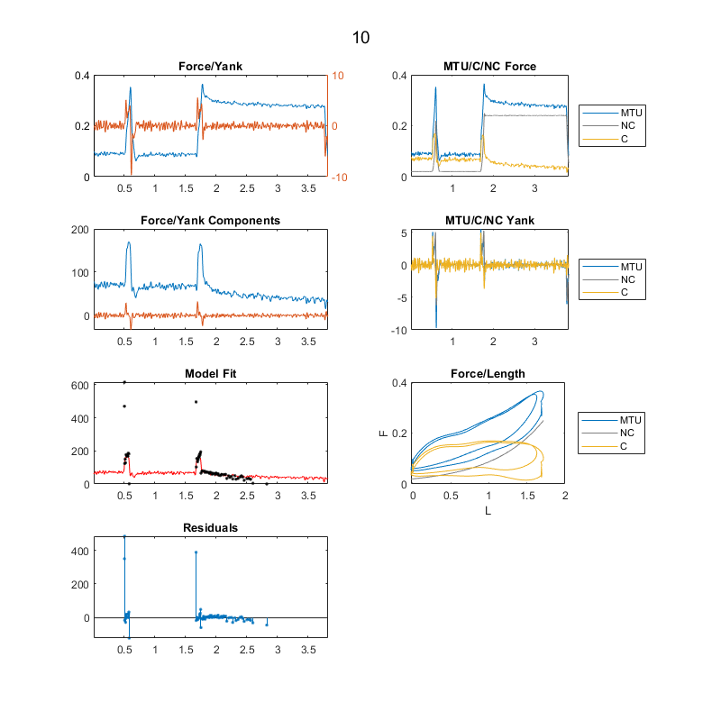 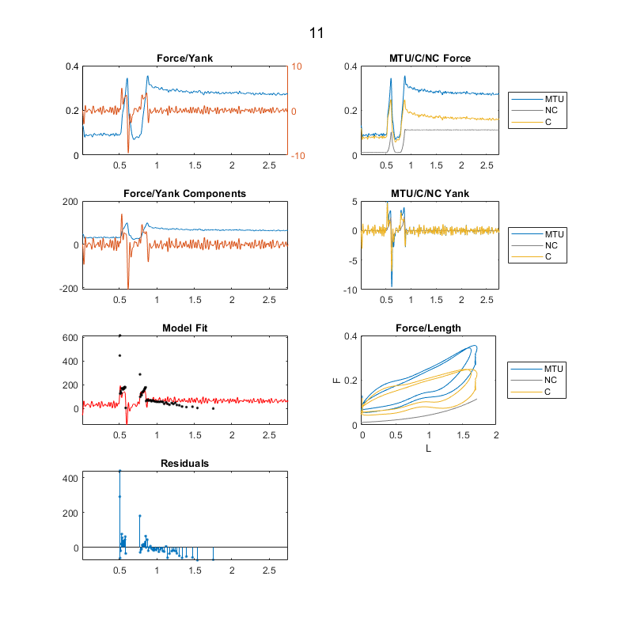 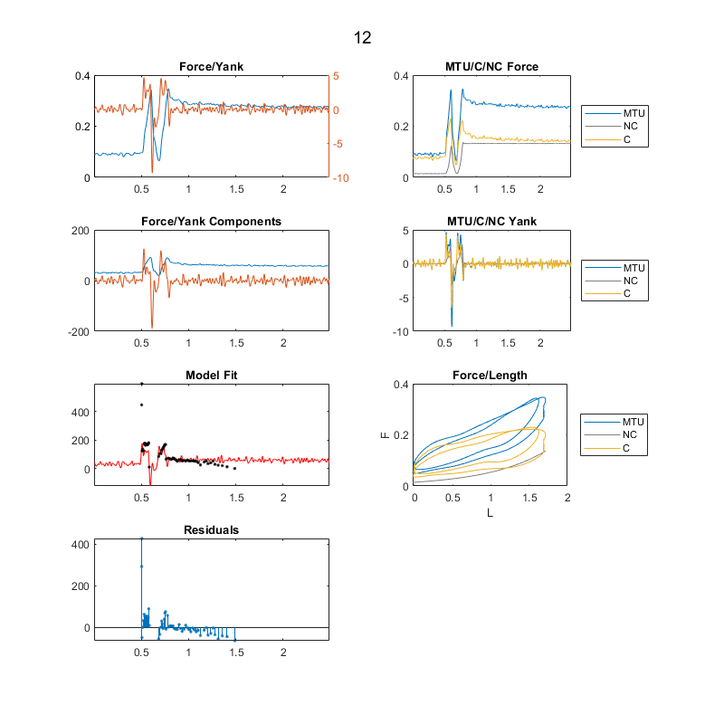 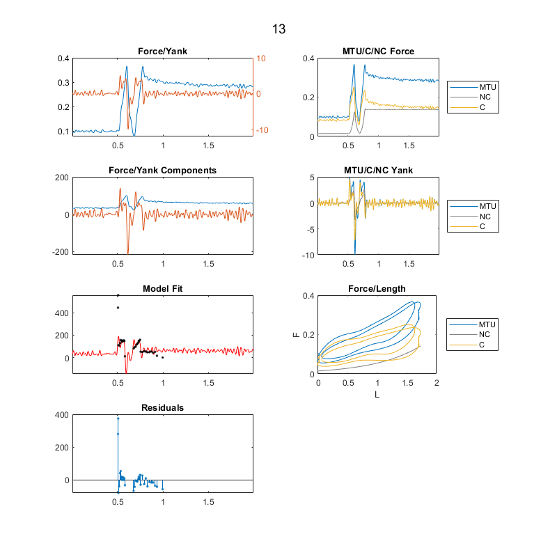 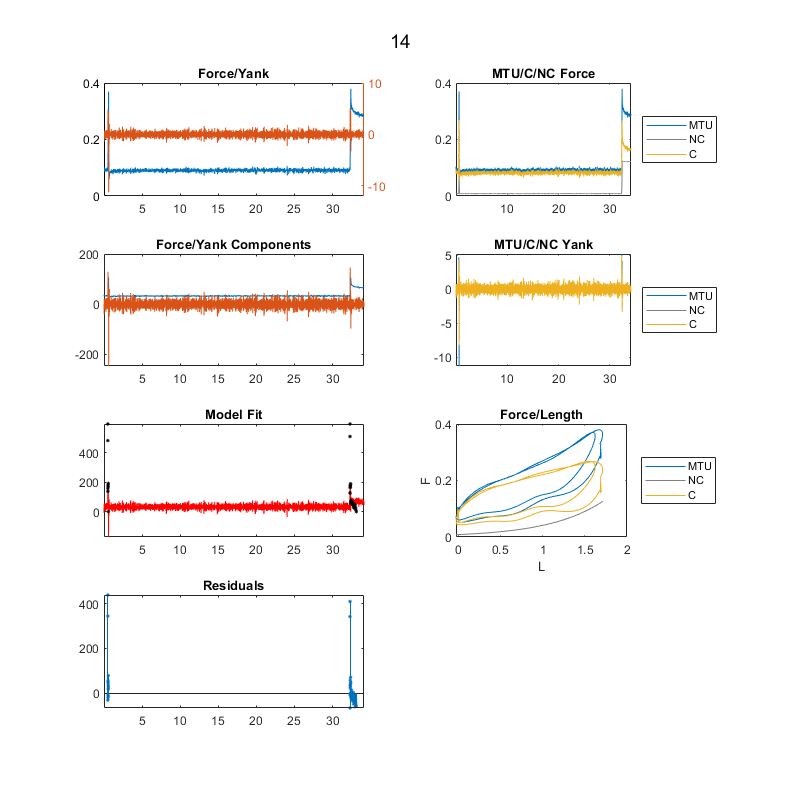 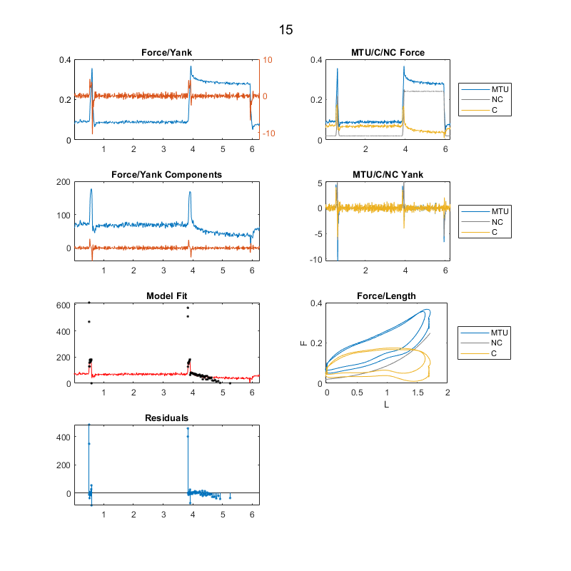 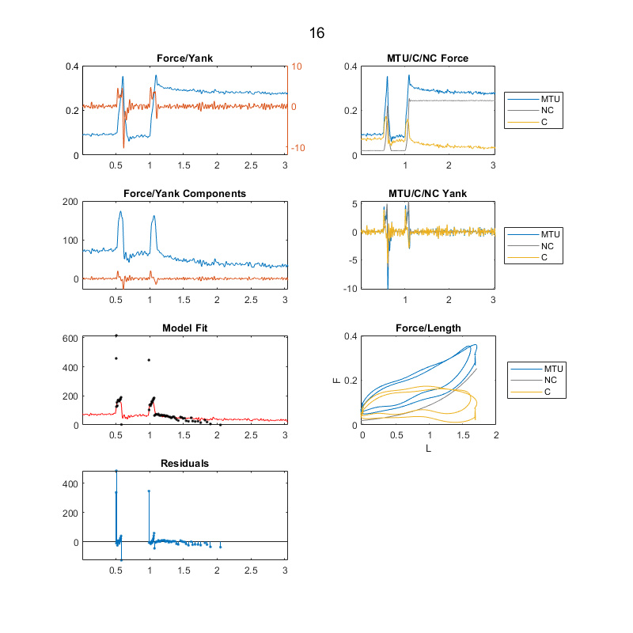 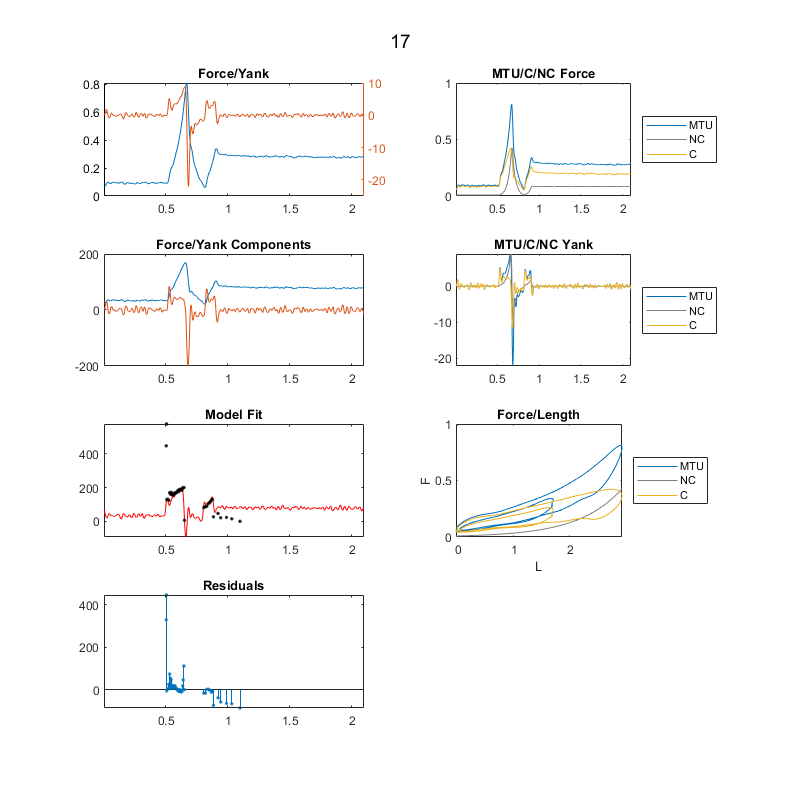